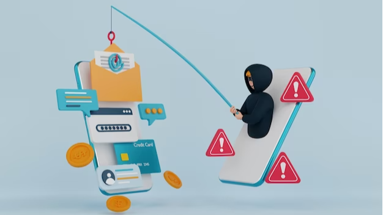
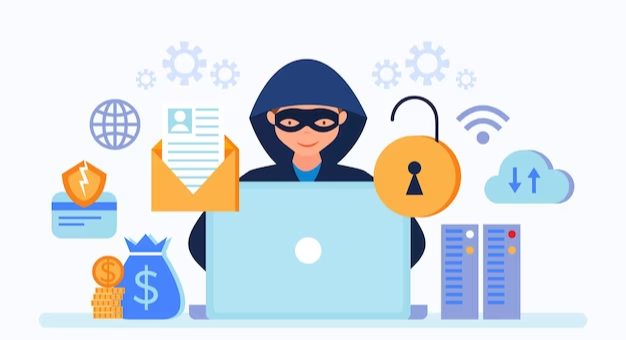

As technology continues to advance, so do the methods of cyberattacks. Phishing attacks, which use fraudulent emails to deceive recipients into divulging sensitive or personal information, have become increasingly prevalent. To combat this, email providers have implemented various security measures, one of which is DMARC (Domain-based Message Authentication, Reporting, and Conformance). DMARC is a framework that allows domain owners to specify how their emails are authenticated and what actions should be taken if an email fails authentication checks.
In this blog post, we will discuss the importance of Gmail DMARC in preventing phishing attacks and how it works. We will also explore the benefits of implementing DMARC for organizations, such as improved email deliverability and protection of brand reputation. Furthermore, we will cover the challenges associated with DMARC implementation and how to overcome them. Click here to discover more about gmail DMARC.

The effectiveness of Gmail DMARC (Domain-based Message Authentication, Reporting, and Conformance) in preventing phishing lies in its ability to boost email authentication and minimize the likelihood of fraudulent emails infiltrating users' inboxes. DMARC serves as an email validation mechanism that enables domain owners to outline the appropriate course of action for emails that fail authentication checks.
Here's how Gmail DMARC helps prevent phishing:
DMARC relies on SPF (Sender Policy Framework) and DKIM (DomainKeys Identified Mail), two established authentication mechanisms. SPF confirms that the sending server has permission to send emails for the domain, while DKIM guarantees that the email content was not altered during transmission. DMARC confirms the sender's domain authenticity by enforcing these authentication methods.
DMARC enables domain owners to establish a protocol for managing emails that do not pass authentication checks. The available policy choices are "none," "quarantine," and "reject." By selecting a policy, domain owners can direct email receivers, like Gmail, on how to handle emails that fail authentication. The "reject" policy is the strictest, directing receivers to completely reject or block the email.
The outcomes of email authentication are thoroughly documented by DMARC. Email receivers, such as Gmail, forward these reports to the owners of the domains, which comprise details about authenticated and unauthenticated emails. This transparency enables domain owners to detect possible phishing endeavors, including the origin of fraudulent emails and any unauthorized utilization of their domains.
Gmail can follow the domain owner's directives for emails that do not pass authentication by utilizing DMARC with either a "quarantine" or "reject" policy. This decreases the likelihood of phishing emails making it to users' inboxes. In the event of an email failing authentication, Gmail may relocate it to the spam folder if the policy is set to "quarantine." However, if the policy is set to "reject," Gmail will refuse to deliver the email, effectively stopping it from reaching the recipient.

Implementing Gmail DMARC (Domain-based Message Authentication, Reporting, and Conformance) offers several benefits for domain owners and email recipients. Here are some key advantages of Gmail DMARC implementation:
To conclude, Gmail DMARC plays a crucial role in preventing phishing attacks and protecting users' personal and sensitive information. By implementing DMARC policies, companies and organizations can ensure that only authorized emails get delivered to recipients' inboxes, significantly reducing the risk of phishing attacks. As phishing attacks continue to evolve and become more sophisticated, it is essential to stay vigilant and take proactive measures to secure our online communication.